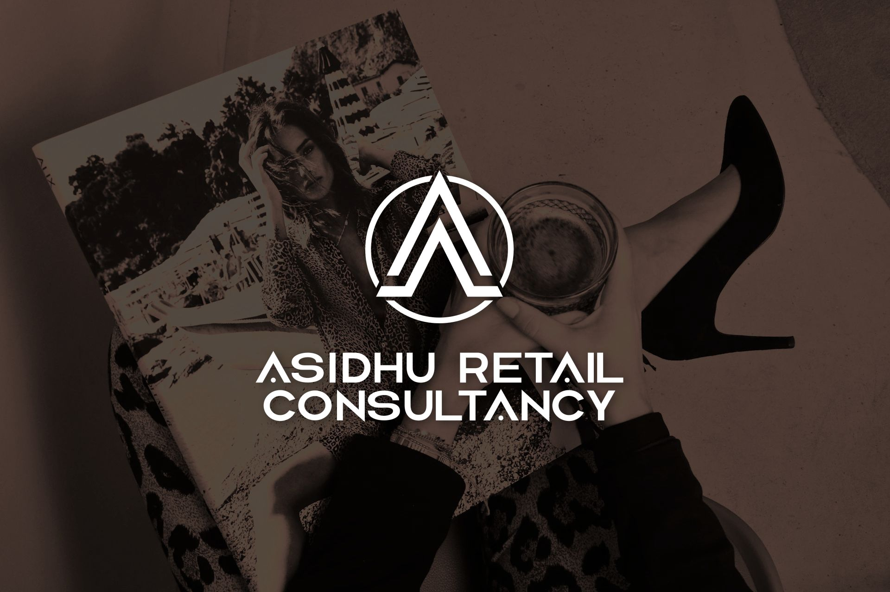

Retail
Great retail starts with people. I help brands build high-performing teams, develop confident leaders, strengthen clientelling and CRM, and create memorable customer experiences that drive commercial results.

Luxury retail consultancy
Helping luxury and premium brands strengthen retail, elevate operations and build exceptional teams.
With more than 20 years of luxury retail leadership, I partner with brands to improve performance, develop people and deliver outstanding customer experiences.
Luxury is in the details. Excellence is in the execution.
Let's ConnectAbout
It’s my passion.
For more than 20 years I’ve worked across some of the world’s leading luxury brands, progressing from the shop floor to regional leadership, supporting boutiques, flagship stores, wholesale partnerships and multi-site operations across Europe.
Most importantly, I’ve learnt that luxury isn’t created by chance. It’s created by people who genuinely care about every detail.
Today I work alongside luxury and premium brands, sharing that experience to help businesses grow, strengthen their teams and deliver operational excellence.
Services
Great retail starts with people. I help brands build high-performing teams, develop confident leaders, strengthen clientelling and CRM, and create memorable customer experiences that drive commercial results.
Luxury is in the details. I help brands build retail operations that run seamlessly-from store openings and operational excellence to Health & Safety, compliance, operational procedures, store handbooks, POS implementation, maintenance, inventory control and operational systems. Every detail is designed to support exceptional customer experiences and strong commercial performance.
I don’t recruit in volume. Every search is personal. I work closely with luxury brands to identify exceptional talent across retail, wholesale and head office functions. Whether it’s a Client Advisor, Tailor, Store Manager, Area Manager, Retail Director or a specialist head office role, every search is built around experience, character and cultural fit.
I support brands in protecting customer experience across wholesale partnerships, balancing commercial and operational priorities.
When brands need experienced leadership, I step in quickly. Whether it’s a new store opening, a turnaround, operational change or temporary leadership support, I deliver hands-on expertise from day one. Hands-on. Practical. Results-driven.
Experience Includes
Why work with me
I’ve stood where your teams stand. I’ve led where your leaders lead. That’s why I understand both the challenges and the opportunities.
I don’t believe you can advise someone on something you’ve never done yourself. Everything I offer comes from more than 20 years of hands-on experience leading luxury retail businesses across the UK and Europe.
I don’t believe in complicated solutions.
I believe in listening first, understanding your business, your people and your goals, then working alongside you to deliver practical solutions that create lasting results.
Whether I’m supporting a flagship store, leading a retail transformation, strengthening operations, finding exceptional talent or stepping into an interim leadership role, my focus is always the same:
Deliver what was agreed. Do it properly. Leave the business stronger than I found it. Luxury is in the details. Excellence is in the execution.
Approach
What does success look like?
Once we define that together, I work alongside your business to make it happen.
Because that’s where real retail happens.
Contact
Let’s talk.